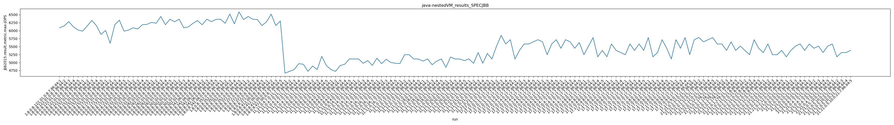
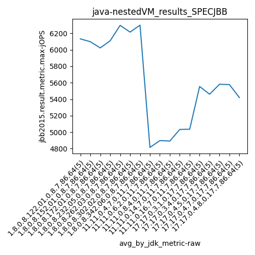
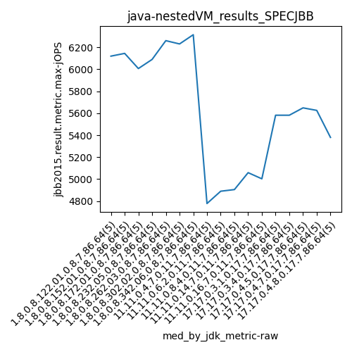
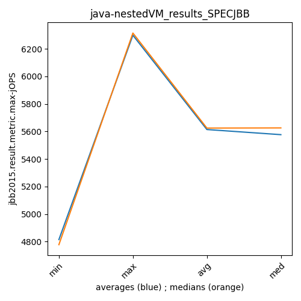
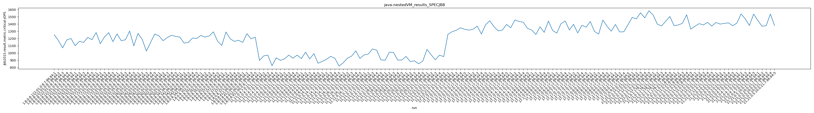
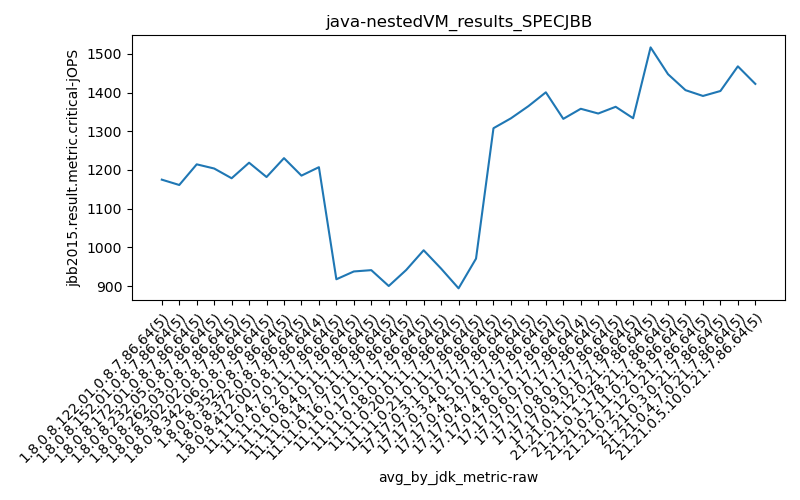
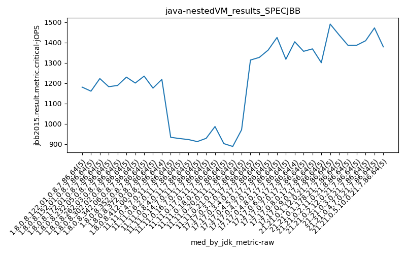
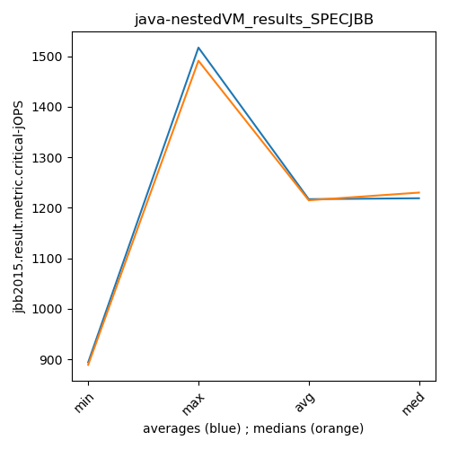

java- SPECJBB
Context at bottom
/home/jvanek/git/benchmarks-in-nested-virtualisation-toolchain/final_results/nestedVM_results/nestedVM_results_SPECJBB
java-
SPECJBB
nestedVM_results_SPECJBB
- nestedVM_results_SPECJBB - max-jops
- nestedVM_results_SPECJBB - critical jops
nestedVM_results_SPECJBB - max-jops
Expected number of java- JDKs: 17
1st avgmed_alljdks_metric:
/home/jvanek/git/benchmarks-in-nested-virtualisation-toolchain/final_results/result_processing.py /home/jvanek/git/benchmarks-in-nested-virtualisation-toolchain/final_results/nestedVM_results/nestedVM_results_SPECJBB jbb2015.result.metric.max-jOPS False
values: [6090, 6149, 6284, 6120, 6020, 5985, 6145, 6321, 6159, 5882, 6007, 5605, 6187, 6330, 5985, 6020, 6090, 6052, 6187, 6198, 6261, 6231, 6446, 6187, 6359, 6279, 6359, 6088, 6118, 6231, 6315, 6185, 6359, 6284, 6353, 4665, 4722, 4778, 4963, 4946, 4722, 4890, 4778, 5194, 4905, 4778, 4722, 4905, 4946, 5111, 5111, 5111, 4976, 5059, 4909, 5136, 4963, 5102, 5003, 4976, 5111, 5514, 5851, 5582, 5716, 5111, 5380, 5582, 5582, 5649, 5716, 5649, 5245, 5582, 5716, 5447, 5716, 5649, 5447, 5626, 5245, 5514, 5783, 5178, 5380]

Expected number of iterations: 5
final number of values: 85 out of 85
Pass rate: 100.0%
values: (4665, 6446, 5614.270588235294, 5649)

** accuracy from all jdks and runs
more is better
MIN: 4665
MAX: 6446
AVG: 5614.270588235294
MED: 5649
Relative differences 1:
MIN-MAX: 28.0 %
MIN-AVG: 17.0 %
MIN-MED: 17.0 %
MAX-MIN: -38.0 %
MAX-AVG: -15.0 %
MAX-MED: -14.0 %
AVG-MED: 1.0 %
stored to java-.properties. sort | uniq that!
2nd avgmed_by_jdk_metric:
values: [6132.6, 6098.4, 6022.8, 6109.4, 6296.8, 6215.0, 6299.2, 4814.8, 4897.8, 4892.4, 5033.2, 5036.0, 5554.8, 5460.8, 5581.6, 5577.0, 5420.0]

values: [6120, 6145, 6007, 6090, 6261, 6231, 6315, 4778, 4890, 4905, 5059, 5003, 5582, 5582, 5649, 5626, 5380]

values: (4814.8, 6299.2, 5614.270588235295, 5577.0)
values: (4778, 6315, 5624.882352941177, 5626)

** accuracy from all jdks where runs were avged
more is better
MIN: 4814.8
MAX: 6299.2
AVG: 5614.270588235295
MED: 5577.0
Relative differences 1:
MIN-MAX: 24.0 %
MIN-AVG: 14.0 %
MIN-MED: 14.0 %
MAX-MIN: -31.0 %
MAX-AVG: -12.0 %
MAX-MED: -13.0 %
AVG-MED: -1.0 %
stored to java-.properties. sort | uniq that!
** accuracy from all jdks where runs were medianed
more is better
MIN: 4778
MAX: 6315
AVG: 5624.882352941177
MED: 5626
Relative differences 1:
MIN-MAX: 24.0 %
MIN-AVG: 15.0 %
MIN-MED: 15.0 %
MAX-MIN: -32.0 %
MAX-AVG: -12.0 %
MAX-MED: -12.0 %
AVG-MED: 0.0 %
stored to java-.properties. sort | uniq that!
nestedVM_results_SPECJBB - critical jops
Expected number of java- JDKs: 17
1st avgmed_alljdks_metric:
/home/jvanek/git/benchmarks-in-nested-virtualisation-toolchain/final_results/result_processing.py /home/jvanek/git/benchmarks-in-nested-virtualisation-toolchain/final_results/nestedVM_results/nestedVM_results_SPECJBB jbb2015.result.metric.critical-jOPS False
values: [1252, 1171, 1071, 1181, 1200, 1100, 1161, 1146, 1216, 1183, 1283, 1129, 1223, 1281, 1157, 1264, 1170, 1183, 1303, 1099, 1270, 1189, 1026, 1146, 1262, 1236, 1170, 1214, 1244, 1230, 1219, 1138, 1145, 1206, 1201, 898, 960, 971, 824, 934, 899, 919, 971, 928, 971, 923, 1012, 919, 992, 859, 885, 913, 954, 929, 819, 865, 929, 957, 1030, 926, 1257, 1294, 1314, 1348, 1327, 1316, 1327, 1371, 1263, 1391, 1445, 1363, 1306, 1317, 1394, 1349, 1456, 1435, 1425, 1339, 1318, 1256, 1361, 1285, 1441]

Expected number of iterations: 5
final number of values: 85 out of 85
Pass rate: 100.0%
values: (819, 1456, 1159.4588235294118, 1189)

** accuracy from all jdks and runs
more is better
MIN: 819
MAX: 1456
AVG: 1159.4588235294118
MED: 1189
Relative differences 1:
MIN-MAX: 44.0 %
MIN-AVG: 29.0 %
MIN-MED: 31.0 %
MAX-MIN: -78.0 %
MAX-AVG: -26.0 %
MAX-MED: -22.0 %
AVG-MED: 2.0 %
stored to java-.properties. sort | uniq that!
2nd avgmed_by_jdk_metric:
values: [1175.0, 1161.2, 1214.6, 1203.8, 1178.6, 1218.8, 1181.8, 917.4, 937.6, 941.0, 900.0, 941.4, 1308.0, 1333.6, 1365.0, 1400.8, 1332.2]

values: [1181, 1161, 1223, 1183, 1189, 1230, 1201, 934, 928, 923, 913, 929, 1314, 1327, 1363, 1425, 1318]

values: (900.0, 1400.8, 1159.4588235294116, 1181.8)
values: (913, 1425, 1161.2941176470588, 1189)

** accuracy from all jdks where runs were avged
more is better
MIN: 900.0
MAX: 1400.8
AVG: 1159.4588235294116
MED: 1181.8
Relative differences 1:
MIN-MAX: 36.0 %
MIN-AVG: 22.0 %
MIN-MED: 24.0 %
MAX-MIN: -56.0 %
MAX-AVG: -21.0 %
MAX-MED: -19.0 %
AVG-MED: 2.0 %
stored to java-.properties. sort | uniq that!
** accuracy from all jdks where runs were medianed
more is better
MIN: 913
MAX: 1425
AVG: 1161.2941176470588
MED: 1189
Relative differences 1:
MIN-MAX: 36.0 %
MIN-AVG: 21.0 %
MIN-MED: 23.0 %
MAX-MIN: -56.0 %
MAX-AVG: -23.0 %
MAX-MED: -20.0 %
AVG-MED: 2.0 %
stored to java-.properties. sort | uniq that!
/home/jvanek/git/benchmarks-in-nested-virtualisation-toolchain/final_results/nestedVM_results/nestedVM_results_RADARGUNs1
java-
SPECJBB
/home/jvanek/git/benchmarks-in-nested-virtualisation-toolchain/final_results/nestedVM_results/nestedVM_results_DACAPO
java-
SPECJBB
/home/jvanek/git/benchmarks-in-nested-virtualisation-toolchain/final_results/nestedVM_results/nestedVM_results_JMH
java-
SPECJBB
pass rates:
nestedVM_results_SPECJBB=100.0%
Context:
- nestedVM_results
- SPECJBB